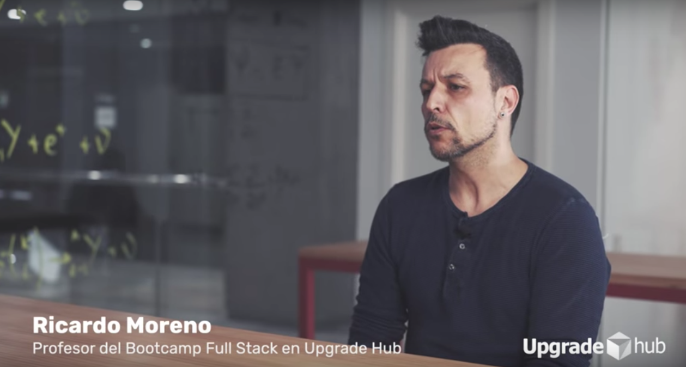
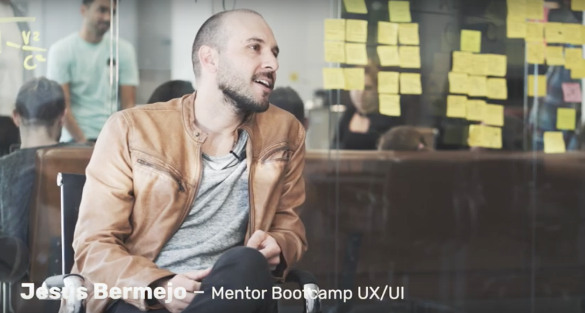

Práctica de elementos de bloque y en línea
 Upgrade Hub
Upgrade Hub
Bootcamps
Bootcamps con diferentes horarios y duración:
-
- Full Stack Developer Bootcamp Full-time:
- - Full Stack en poco menos de dos meses.
-
- Full Stack Developer Bootcamp Part-time:
- - Preparación en Full Stack compatible con otras actividades.
 Ricardo Moreno
-
- UX/UI Designer Bootcamp Full-time:
- - Curso intensivo como Diseñador UX/UI.
-
- UX/UI Designer Bootcamp Part-time:
- - Formación como Diseñador UX/UI compatible con otras actividades.
 Jesús Bermejo
Todos los cursos están orientados a la empleabilidad de los alumnos, fomándoles por medio de la técnica del learning by doing.